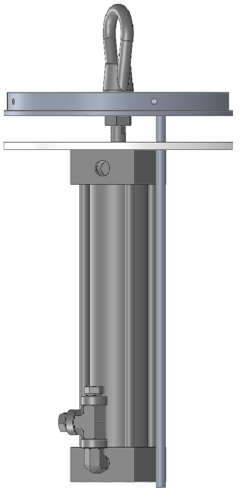

September 2017 - Present
I am the responsible engineer for the High Altitude DEployment System (HADES) on the MIT Rocket Team. This system is designed to reliably separate the rocket at high altitude and deploy the drogue parachute. At a high level, HADES uses an explosive charge contained inside a piston to break nylon shear pins and push the two halves of the rocket apart. This system was succesfully deployed during the flight of Hermes 1 and will be used on future missions such as Hermes 3 and Spaceshot.